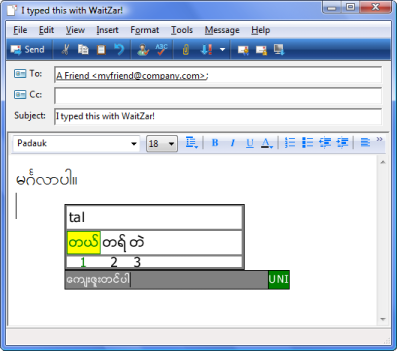

Type Burmese Easily On Windows
 WaitZar is the easiest way to start typing Burmese on Windows. Not only is it small, powerful, and fast, it also works on any computer with Windows 2000, XP, or Vista. (Linux users can try our scim-waitzar port.) It also has these great features:- Instant Start — Ther's no need to install WaitZar; just run it. This makes WaitZar ideal for use in internet cafes, or on computers you don't have administrative rights to.
- Fully Windows Compatible — WaitZar can type in any Windows program. Use it in Microsoft Word, Firefox, Google Talk, or anything else.
- Simple to Use — You can type words using a simple "burglish" (romanization), designed and approved by the Burmese community to be both easy to learn and efficient for typing long emails. If you don't know how to type a word, it's easy to look up with the "F1" key.
- Multi-Font — WaitZar can allow you to type in Win Innwa, Zawgyi-One, Padauk, Myanmar 3, or Parabaik.
- Free & Community-Oriented — The WaitZar developers are providing this program for free to the community. Also, we are very happy to listen to any comments or suggestions you might have. You'll find that we're very friendly, and happy to add new features that you need.
Start using WaitZar today!
WaitZar is very easy to start learning. Have a look at our 5-minute introduction to WaitZar; it provides the easiest introduction to the program. If you want more information, you can download the User's Guide. And, of course, you can always email us with any questions you might have.If you like using WaitZar, please tell your friends about it. You can also add this image to your blog or forum profile to show that you type using WaitZar.